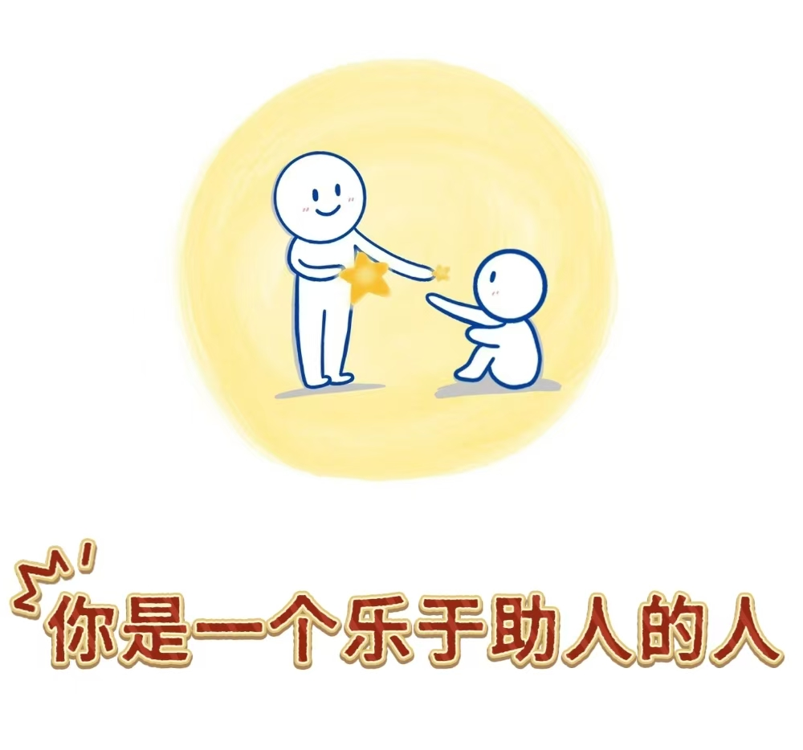

根据本次人格特质测验的结果, 您的得分在“乐于助人”这一维度上极高，位于所有参与者的前5%，充分体现了您高度的助人为乐精神。
测验结果表明， 您具备极强的共情能力和社会责任， 能够敏锐感知他人的情绪和需求，并设身处地为他人着想，当他人遇到困难时，无论是提供物质上的支持还是给予精神上的鼓励，您总是能以最恰当的方式伸出援手。在您看来，助人行为不仅是一个选择，更是一种责任。 根据本次测验，可以推断您在日常生活中实施助人行为的频率非常高， 比如在公共场合主动让座、在学习中帮助同学等。 同时，您也乐于投入时间和金钱参与志愿活动，为那些需要帮助的人提供支持。 综上，乐于助人对您而言并不是一种偶然行为，而是一种深深内化的个人品质。
